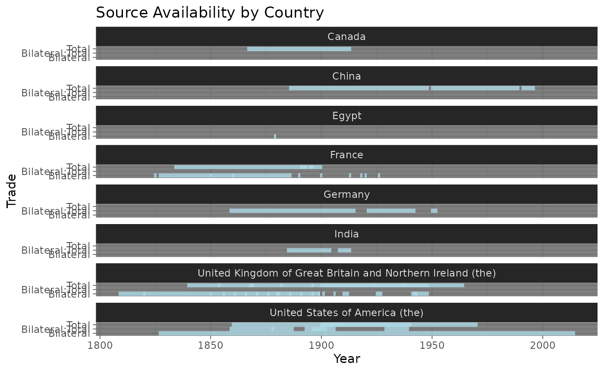
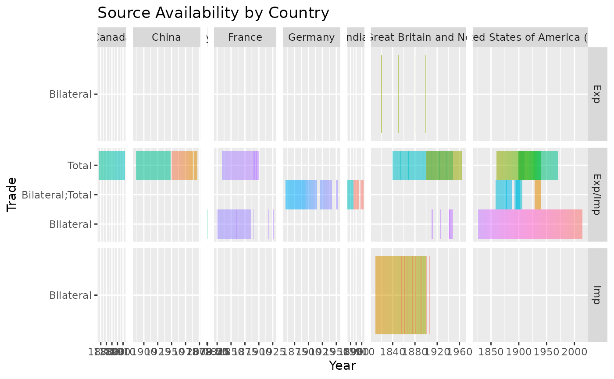
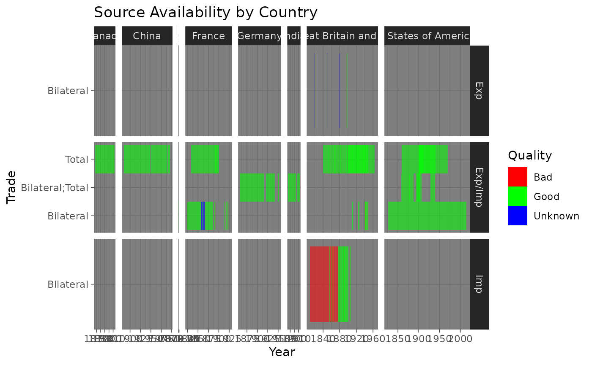
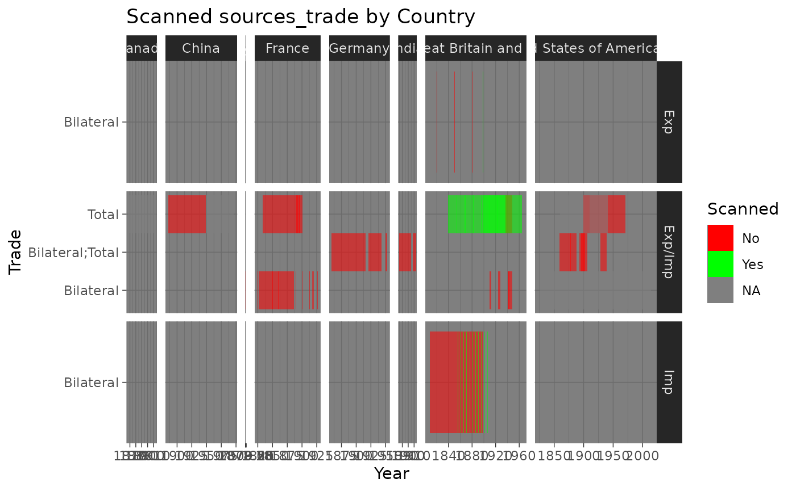

Trade sources year coverage
trade-sources-coverage.Rmd
library(PackageExampleR)
key_path <- here::here(Sys.getenv("GOOGLESHEETS_AUTH_FILE"))
googlesheets4::gs4_auth(path = key_path)First we read the trade sources sheet and build a dataframe where each row accounts for one year.
# Step 1: Authentication
sheet_url <- "1UdwgS87x5OsLjNuKaY3JA01GoI5nwsenz62JXCeq0GQ"
# PART 1: trade_sources FOR TRADE
# Step 2: Rest of Program
expanded_trade_sources <-
sheet_url |>
googlesheets4::read_sheet(sheet = "Final_Sources_Trade") |>
expand_trade_sources()
#> ✔ Reading from WHEP Source identification.
#> ✔ Range ''Final_Sources_Trade''.Now we build some plots.
Plot showing years covered by
expanded_trade_sources:
ggplot2::ggplot(
expanded_trade_sources,
ggplot2::aes(y = Trade, x = Year, fill = "lightblue")
) +
ggplot2::geom_tile(alpha = .8) +
ggplot2::theme_dark() +
ggplot2::labs(title = "Source Availability by Country") +
ggplot2::scale_fill_identity() +
ggplot2::facet_wrap(~Reporter, ncol = 1)
Plot showing by years, colored by
expanded_trade_sources:
ggplot2::ggplot(
expanded_trade_sources,
ggplot2::aes(y = Trade, x = Year, fill = Name, alpha = .8)
) +
ggplot2::geom_tile() +
# theme_minimal() +
ggplot2::theme(legend.position = "None") +
ggplot2::labs(title = "Source Availability by Country") +
ggplot2::facet_grid(ImpExp ~ Reporter, scales = "free", space = "free_x")
Plot showing years covered by expanded_trade_sources,
colored by quality:
ggplot2::ggplot(
expanded_trade_sources, ggplot2::aes(y = Trade, x = Year, alpha = .8)
) +
ggplot2::geom_tile(ggplot2::aes(fill = factor(Quality))) +
ggplot2::theme_dark() +
ggplot2::labs(title = "Source Availability by Country", fill = "Quality") +
ggplot2::guides(alpha = "none") +
ggplot2::scale_fill_manual(
values = c("Bad" = "red", "Good" = "green", "Unknown" = "blue")
) +
ggplot2::facet_grid(ImpExp ~ Reporter, scales = "free", space = "free_x")
Plot showing years covered by expanded_trade_sources,
colored by scanned/not scanned:
ggplot2::ggplot(expanded_trade_sources, ggplot2::aes(y = Trade, x = Year)) +
ggplot2::geom_tile(ggplot2::aes(fill = factor(Scanned), alpha = .8)) +
ggplot2::theme_dark() +
ggplot2::labs(title = "Scanned sources_trade by Country", fill = "Scanned") +
ggplot2::scale_fill_manual(
labels = c("0" = "No", "1" = "Yes"), values = c("0" = "red", "1" = "green")
) +
ggplot2::guides(alpha = "none") +
ggplot2::facet_grid(ImpExp ~ Reporter, scales = "free", space = "free_x")
Plot showing years covered by expanded_trade_sources,
colored by whether or not in SACO:
ggplot2::ggplot(
expanded_trade_sources,
ggplot2::aes(y = Trade, x = Year, alpha = .8)
) +
ggplot2::geom_tile(ggplot2::aes(fill = factor(In_Saco))) +
ggplot2::theme_dark() +
ggplot2::labs(title = "Source Availability by Country", fill = "In Saco") +
ggplot2::guides(alpha = "none") +
ggplot2::scale_fill_manual(
labels = c("0" = "No", "1" = "Yes"), values = c("0" = "red", "1" = "green")
) +
ggplot2::facet_grid(ImpExp ~ Reporter, scales = "free", space = "free_x")